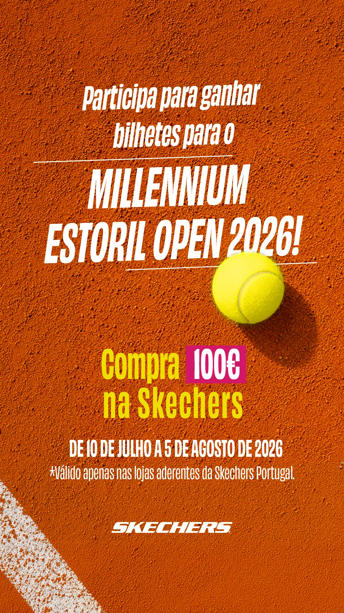
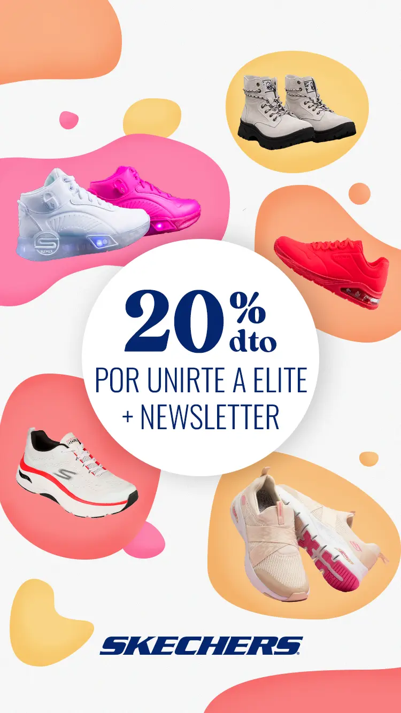

Skechers — sistema y adaptación de formato
Sistema de plantillas técnicas · patrocinio Millennium Estoril Open · stories para Instagram · motion graphics · imagen de producto con IA

Millennium Estoril Open — dirección visual de las piezas digitales del patrocinio y diseño de la serie de stories y contenido de producto.


Una misma plantilla técnica adaptada a tres tecnologías distintas: Glide-Step Flex, Hyperburst Cushioning y M-Strike · diseño y maquetación de cada versión.

Sistema de plantilla técnica reutilizable, adaptado a cinco modelos de zapatilla · diseño y maquetación de cada versión.



Ejemplos de stories para Instagram: sorteo Estoril Open, campaña de newsletter y Blue Monday · diseño de cada pieza.
Línea creativa — vídeo resumen del sistema visual · diseño y motion graphics.